Аргайл – узор из ромбов или квадратов, расположенных по диагонали, и пересекающихся диагональных линий. Геометрия узора аргайл украшала килты и пледы знаменитого шотландского клана Кэмпбеллов. Свое название узор получил от названия местности Шотландии, в которой проживали Кэмпбеллы. Чаще всего узор аргайл используется в вязаных вещах. В моду вошел в 1920-х годах благодаря британской компании Pringle of Scotland производящей элитный трикотаж и вязанные вещи. Свитер с V-образным вырезом и узором аргайл является классическим символом британского стиля.
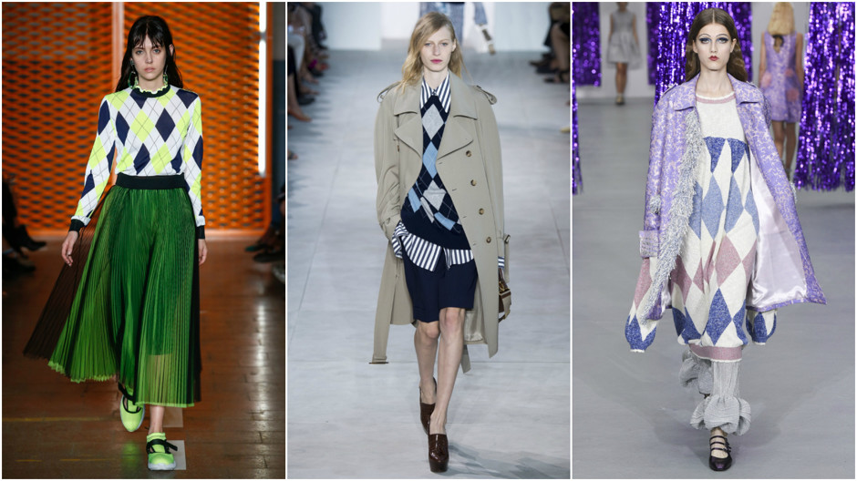
Брыжи – воротник из ткани или кружев, уложенных в мелкую складку и очень туго накрахмаленных для сохранения формы. Вошел в европейскую моду в начале XVI века.
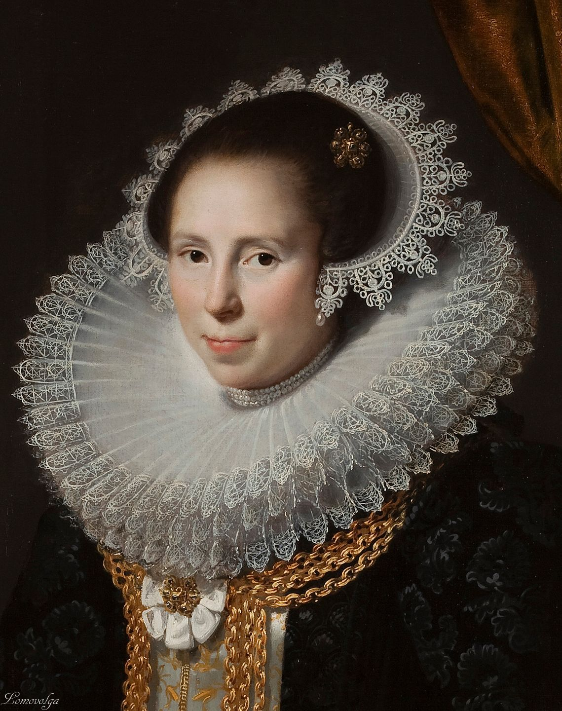
Весткоут – суконный кафтан, элемент мужского костюма XVIII века.
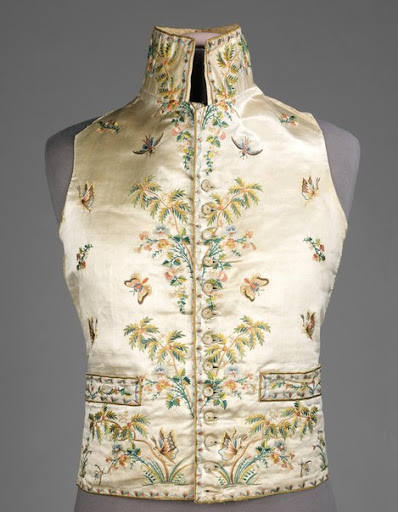
Гинем – это принт на хлопчатобумажной ткани, представляющий собой мелкую клетку на белом фоне, отличительной особенностью которой является то, что полосы приглушенного тона, образующие клетку, в местах пересечения образуют темный квадрат.
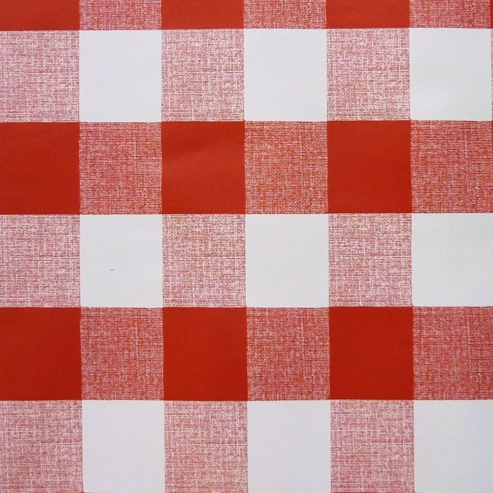
Денди – социально-культурный тип XIX века: мужчина, подчёркнуто следящий за эстетикой внешнего вида и поведения, изысканностью речи.
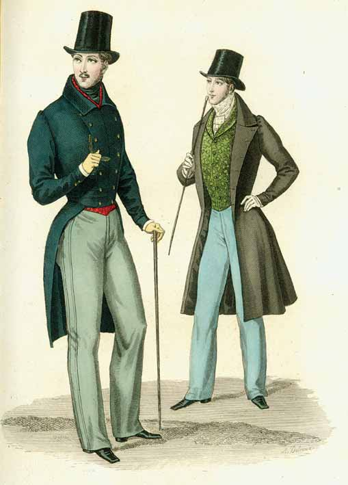
Жюстокор — тип мужского кафтана, появившийся в конце XVII века и сделавшийся в XVIII веке обязательным элементом европейского придворного костюма.
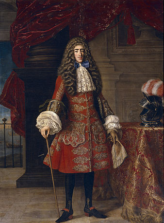
Капор — женский головной убор эпохи бидермейера, соединяющий в себе черты чепца и шляпы. У капора высокая шляпная тулья (для убранных на затылок волос) и обрамляющие лицо широкие жёсткие поля, сужающиеся к затылку.
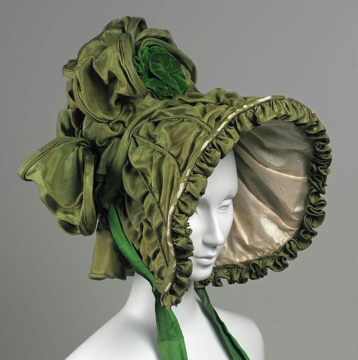
Лоферы — туфли без застежек с круглым носиком и длинным язычком. От мокасин их отличает небольшой каблук. Часто украшены спереди кисточкой или перемычкой.
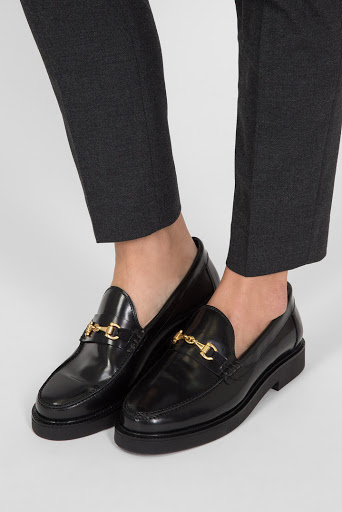
Норфолк – аристократический охотничий пиджак времен Шерлока Холмса. Классический норфолк однобортный, имеет накладные карманы и пояс на талии. Своё название пиджак получил благодаря Герцогу Норфолкскому, с поместья которого и пошла мода на эту модель.
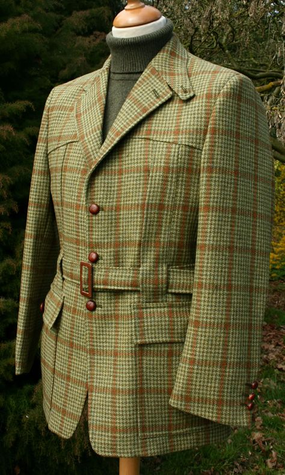
Парасоль – зонт, защищающий от солнца. Как правило, он сделан из бумаги или кружева.
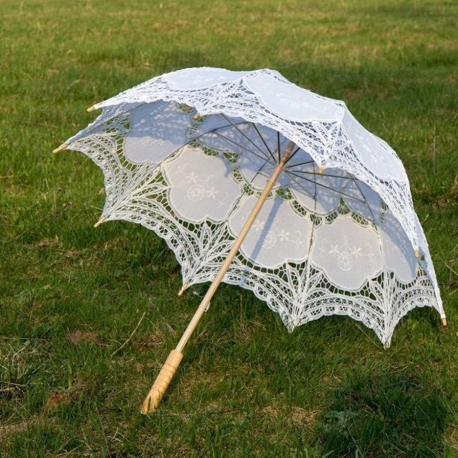
Рукава-буф — это рукава, напоминающие фонарики, объемные, но суживающиеся к концу.
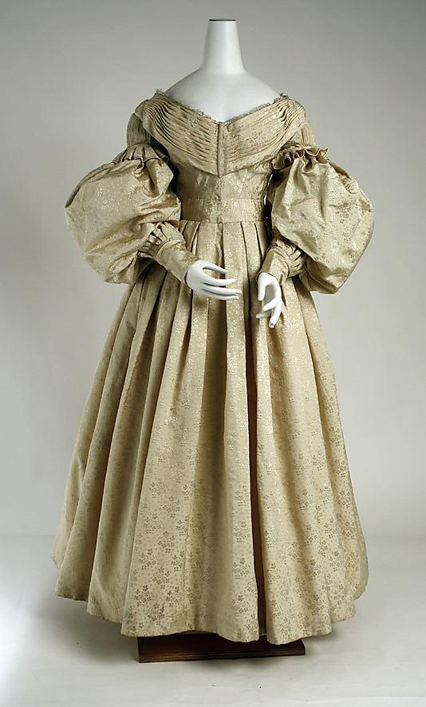
Сюртук — длинный, как правило до колена, однобортный или, реже, двубортный предмет мужского гардероба, обычно приталенный. Основа элегантного костюма XIX века, носился, как правило, с жилетом (часто подбирался подходящий по цветовой гамме) и брюками с высокой посадкой, либо с панталонами (тип брюк с высокой застёжкой на пуговицах, заканчивающейся выше талии, пришли из костюма XVIII века, с появлением классических брюк стали считаться более консервативным вариантом).
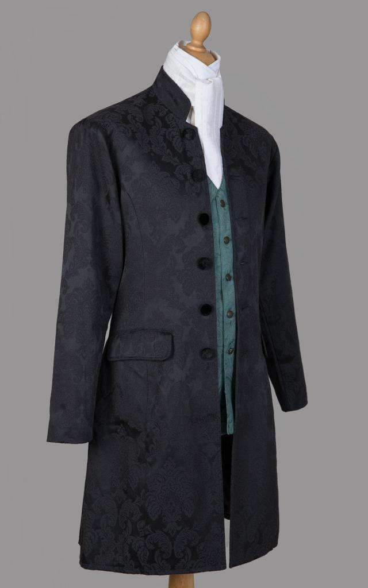
Турнюр — модное в 1870—1880-х годах приспособление в виде подушечки, которая подкладывалась дамами сзади под платье ниже талии для придания пышности фигуре. Также турнюр мог быть в виде сборчатой накладки, располагавшейся чуть ниже талии на заднем полотнище верхней части юбки, что формировало характерный силуэт с очень выпуклой нижней частью тела.
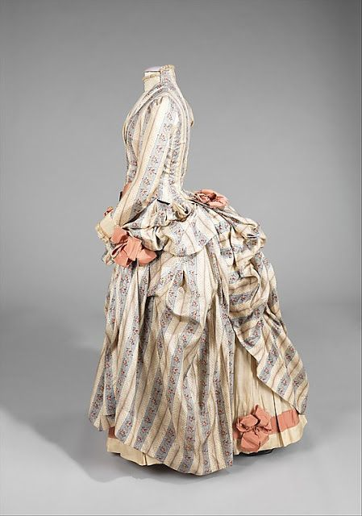
Фижма – каркас из ивовых или стальных прутьев или из пластин китового уса для придания пышности женской юбке.
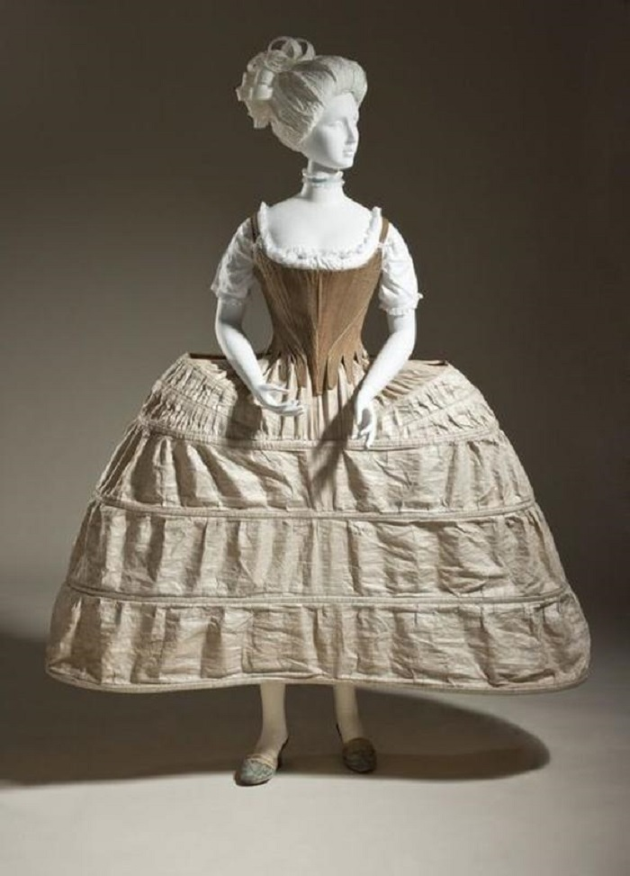
Челси – модель обуви, была придумана в Британии в XIX веке. Отличительной чертой ботинок Челси является вставка эластичной резинки по бокам, благодаря чему не требуется ни шнуровка, ни молния. Изначально являлись обувью рабочего класса. В начале XXI века обрели популярность в модных кругах.
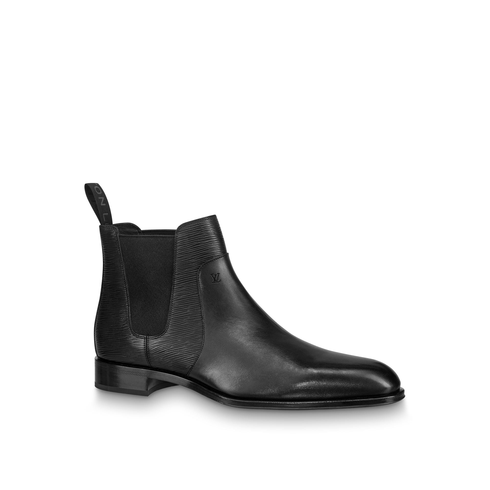
Шоссы — (франц.) с 12 в. длинные, облегающие ногу чулки, часто из материи разного цвета.
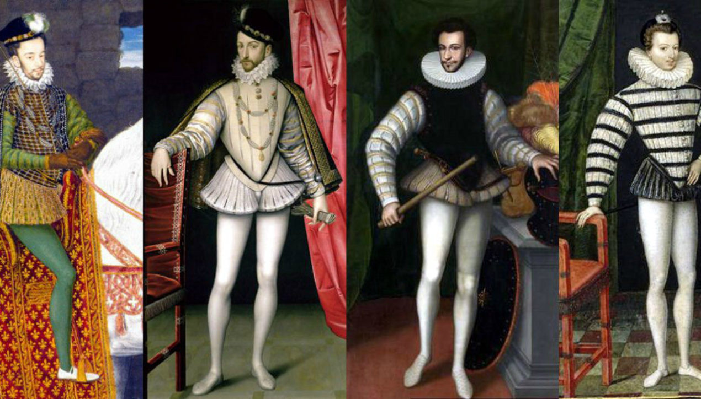